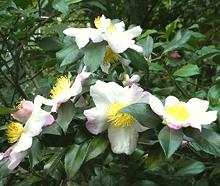

SAFARI
Users
THIS PAGE IS A PLACE HOLDER
We have gathered a lot of information for this page, but haven't had the time to assemble it yet. It'll be here as soon as we can manage it.
Camellia sinensis Teas

The making of tea from leaves of the Camellia sinensis apparently
began, probably as a medicinal tea, in Yunan, in the far southwestern
corner of China, a few more than 3000 years ago. It is said to have
spread to the rest of ]China after the State of Qin conquered Sichuan,
just to the north of Yunan. Translation of words in early documments is
uncertain, so the first unequivicable written record we have for tea
drinking is from around 300 BCE.
Photo by Eric Chan W.C. distributed under license
Creative Commons
Attribution-ShareAlike v3.0 Unported.